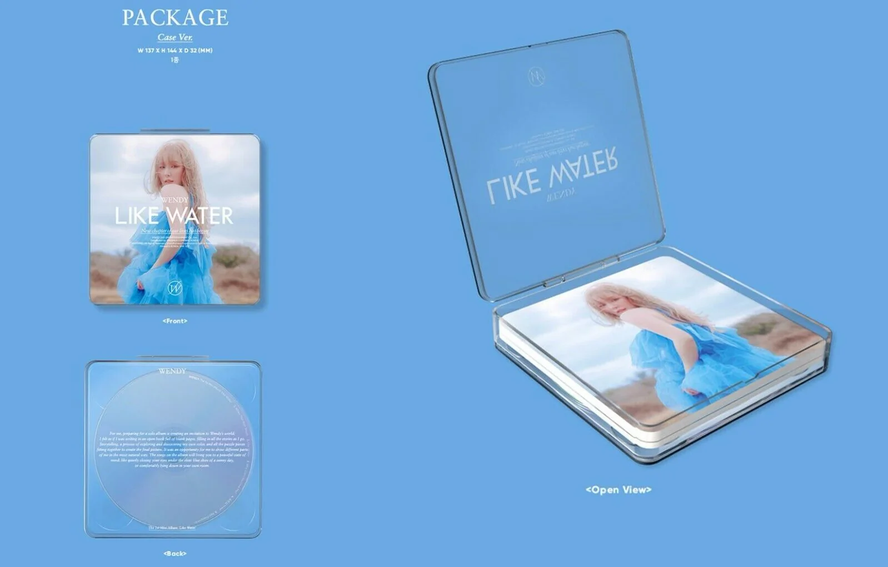
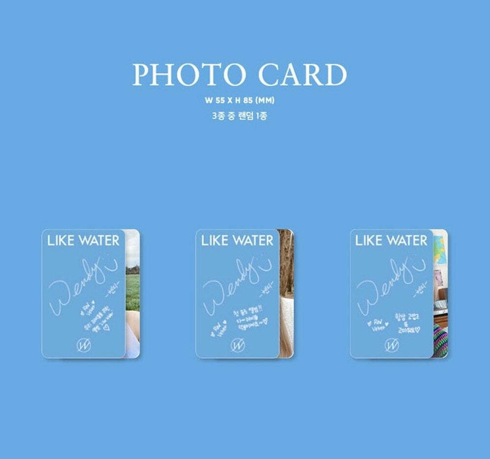

¡Ultimas nnovedades!
WENDY 1ST Mini Album ‘Like Water’
WENDY de Red Velvet, lanzará su álbum en solitario, 'Like Water', el 5 de abril! Este álbum es el primer álbum en solitario que WENDY está lanzando después de su debut y comprende cinco canciones, incluidos los sencillos 'Like Water', 'When This Rain Stops', y 'Best Friend', un dúo con SEULGI de Red Velvet.
Pre-ordenar Más información

